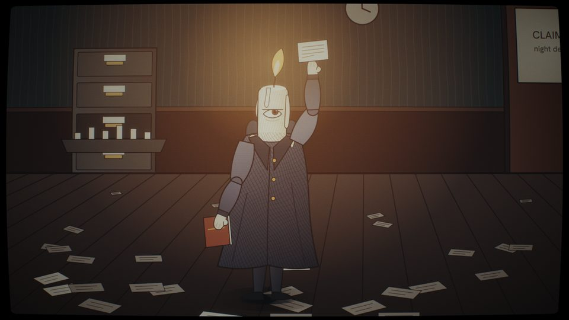
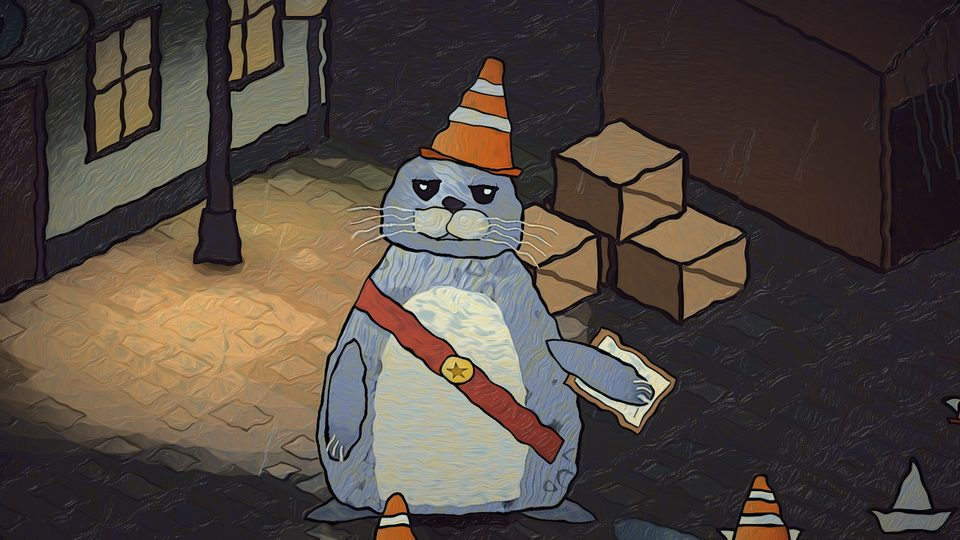
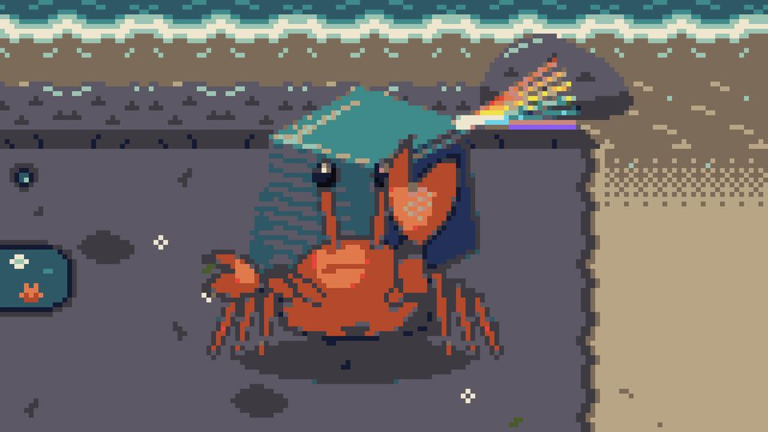
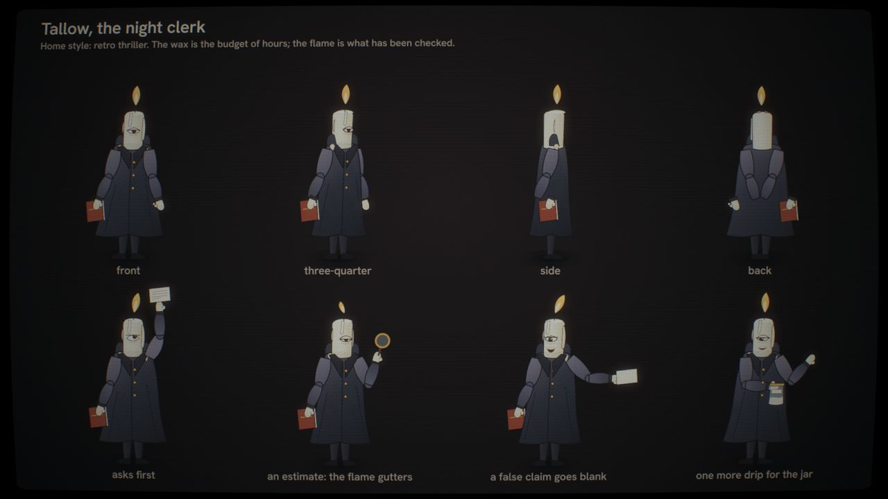
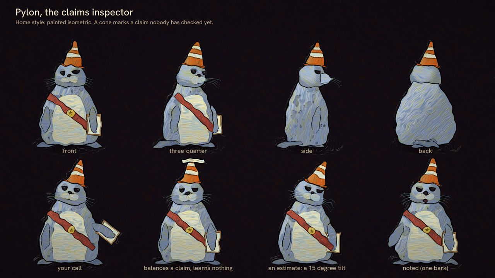
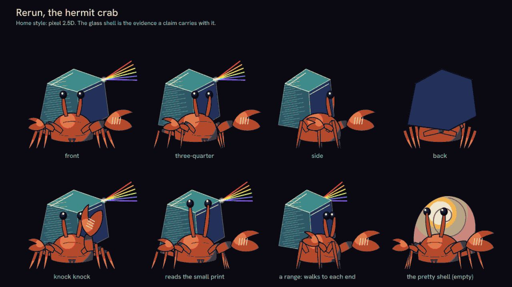

Meet them

Tallow, the night clerk
His head is a candle, and the wax is the time he has: every claim he checks burns a little of it. Before he looks, he asks what you think. Then you find the source together.
Tallow, introduced. Each introduction runs about 25 seconds, with captions and no sound. Transcript: I'm Tallow. I work the night desk. My head is a candle, and the wax is the time I have. Every claim I check burns a little of it. So before I look, I ask you what you think. Then we find the source together. Some claims hold up in the light. Some go blank. Either way, the call is yours. 
Pylon, the claims inspector
A harbour seal in a traffic cone. A cone means nobody has checked a claim yet, and she puts one on every claim that washes in. She shows you where each claim came from, tells you what is still waiting, and leaves the call to you.
Pylon, introduced. Each introduction runs about 25 seconds, with captions and no sound. Transcript: I'm Pylon. I inspect claims at the harbour. A cone means nobody has checked this one yet. I put one on every claim that washes in. There are more claims than cones. So I check what I can, I show you where it came from, and I tell you what is still waiting. I won't guess for you. Your call. 
Rerun, the hermit crab
Its shell is glass with the receipts inside: a claim should carry its own evidence, so anyone can run the check again. It knocks on a claim to hear whether anything is in there, and keeps count of its own wrong guesses on its claw.
Rerun, introduced. Each introduction runs about 25 seconds, with captions and no sound. Transcript: I'm Rerun. My shell is glass, and the receipts are inside it. That is the point. A claim should carry its own evidence, so anyone can run the check again. I knock on a claim to hear whether anything is in there. Sometimes my guess is wrong. I keep count of those, right here on my claw.
Your call
The first film opens with this reference. Decide before you look anything up.
Hale, R., & Morrow, J. (2019). Signal decay in peer networks. Journal of Applied Inference, 12(3), 44-61.
Does this work exist? Your call.
You said: . It does not exist: it was made up for the first film, and nothing on the page gives that away. Only a search tells. In the study the film follows, 55% of GPT-3.5's 222 references and 18% of GPT-4's 414 did not exist. Claiming got cheap. Checking did not., hosted by Tallow, shows the search.
How they host
A guide asks, waits and shows the source. It never makes the call for you. Nothing here keeps score, and nothing plays the next thing on its own.
They introduce and host the films on this site; they do not appear inside the films yet. Each hosts the films closest to its home style: Tallow the ones lit by a single light in the dark, Pylon the ones laid out like a map or a printed page, and Rerun the one built from grids where one dot is one thing. Rerun, whose shell carries its receipts, also hosts the release films, which each release renders from its own output.
They were drawn, rigged and animated with the raw-native engine. Each introduction runs about 25 seconds, with captions and no sound.


